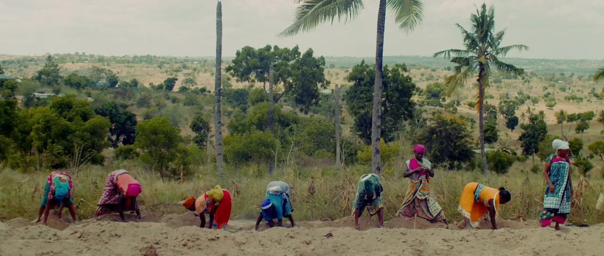

Investor Sheet
Why it matters, the proof, what your capital builds, how the note works and how you’re repaid. The place to begin.
Open the investor sheetA narrative transformation system for the people building another world. A journey people already pay for. This round builds the engine that carries it further.
The people carrying real solutions cannot always get anyone to listen. Metamyth finds the story inside a person, a project, a movement—and makes it clear enough for capital, community and attention to organize around it.
The raise funds the team, organic media and technology that carry the work beyond the founder. Investors are repaid from the cash that growth creates, rather than waiting for a sale or exit.
Traction as reported in the supplied Q4 2026 packet. Read the context
Start with the summary, follow the business into detail, then examine the mechanics. Every supporting document is here in full.
Why it matters, the proof, what your capital builds, how the note works and how you’re repaid. The place to begin.
Open the investor sheetThe market, the offer, the people, the engines, and where this round takes us.
The payment schedule, preliminary outcomes, risks and terms still to settle.
Three cases, month by month. Team, cost assumptions and full use of funds. Yellow cells are the model inputs.
Try “terms”, “business” or “forecast”.
$300K builds the engine. Up to $500K opens the ecosystem. Explore how the capital supports each stage below.
The journey already sells. First, pay the team properly and put the operation in shape. Then turn up organic demand and build the technology and AI-powered workflow that run the journey.
The larger infrastructure is envisioned as a blended stack of philanthropy, patient capital and partners—not this note alone.
Read the full use-of-capital story$300K base + $200K incremental = $500K maximum. Draft allocations, not expenditure to date.
Base allocation · $300K target
| Use | Allocation |
|---|---|
| Tech build | $75K |
| Organic marketing | $70K |
| Team | $55K |
| Designer | $35K |
| Reserve | $30K |
| Website | $15K |
| Legal | $20K |
| Total | $300K |
Additional allocations · Beyond the first $300K
| Use | Allocation |
|---|---|
| In-house media team | $60K |
| Product development | $60K |
| Team | $30K |
| Capital architecture and fundraising | $20K |
| Legal and partnerships | $20K |
| Events | $10K |
| Total additional allocation | $200K |
A demand dividend draws from free cash flow—the cash left after operations and an agreed reinvestment budget. Strong quarters pay more. Lean quarters pay less.
Read every proposed termNo payments during the build period, while capital goes to work on the team, story engine and technology.
Then, quarterly payments of at least 40% of free cash flow, rising to 50% once revenue passes $100K a month. Nothing is owed until operations generate profit, under the proposed structure.
The total repayment multiple rises with time, up to 2.5×. Earlier repayment lowers the company’s total cost. The exact definition of free cash flow and reinvestment remains open.
Draft terms · Total repayment / principal
Stated draft anchors, with continuous linear interpolation between them for exploration. This is a terms illustration, not a return forecast or payment timeline. The final interpolation formula remains subject to definitive terms. Line axis: 1.2×–2.5×; year axis: 3–10. No earlier-year values are inferred.
| Fully repaid by | Total repayment / principal |
|---|---|
| Year 3 | 1.4× |
| Year 5 | 1.7× |
| Year 7 | 2.0× |
| Year 10 and after | 2.5× cap |
Draft schedule, not guaranteed returns or payment dates. The multiple rises smoothly between dates; before year 3 it ranges from 1.2× to 1.4×. Capital is at risk. See the full schedule →
These are preliminary source scenarios for a $300K round—not a live calculator. Revenue and margins beyond the 18-month forecast are assumptions.
USD · Preliminary source scenarios
Select a column to read that case below. Independent scenarios, not a time series or a probability range. No defensible uncertainty intervals are supplied. Estimates are not guarantees.
The source’s central case: repayment in about 3.8 years, with cash beginning to return quarterly after the build period. Timing depends on actual free cash flow.
| Case | 18-mo revenue | Fully repaid | Total returned | Annual estimate |
|---|---|---|---|---|
| Floor | $712K | ~5.7 years | 1.80× | ~16% |
| Target | $1.18M | ~3.8 years | 1.51× | ~16% |
| Stretch | $1.69M | ~2.8 years | 1.38× | ~16% |

This is an invitation to examine the business, not a finalized instrument. Read the assumptions and unresolved terms with the same care as the opportunity.
Definitive terms will be set with counsel.
A proposed larger instrument into which ventures in the Metamyth ecosystem contribute a share of profit. The commons is still being designed and is not part of this offer. Conversion terms remain open.
The investor sheet proposes the Origin journey, community participation while capital is working, a quarterly quest map and council fire call. At $50K+, it describes a council seat—not a board seat. At $100K+, it describes a conversion option and the full journey for the investor or a venture they back. All are proposals, subject to final terms.
The note proposes cash-flow repayment rather than an exit-dependent return, with a capped multiple rather than uncapped equity upside. Source comparisons are preserved in the terms document, with their original links; different instruments carry different risks and are not directly equivalent.
Read the whole business. Test the assumptions. The next chapter starts with an informed conversation.